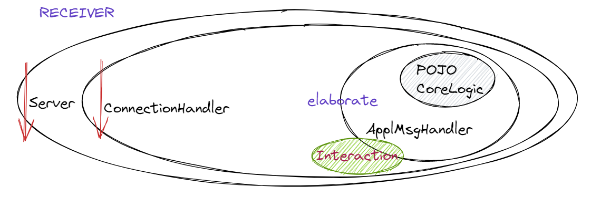
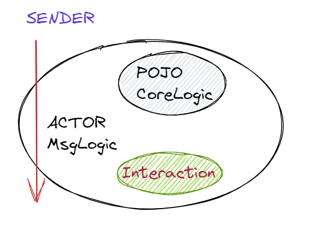
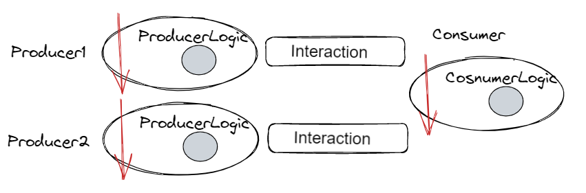
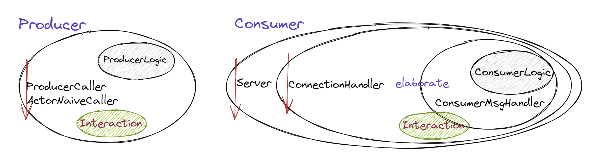

unibo.basicomm23¶
Il progetto intende realizzare il concetto di Interconnessione, fornendo supporti di tipo generale per le comunicazioni via rete un insieme di protocolli.
unibo.basicomm23.interfaces¶
Il package unibo.basicomm23.interfaces definisce un insieme di interfacce che stabiscono i contratti
di riferimento per le interazioni a messaggi.
unibo.basicomm23.interfaces.Interaction¶
interface Interaction {
public void forward( String msg ) throws Exception;
public String request( String msg ) throws Exception;
public void reply( String msg ) throws Exception;
public String receiveMsg( ) throws Exception;
public void forward( IApplMessage msg ) throws Exception;
public IApplMessage request( IApplMessage msg ) throws Exception;
public void reply( IApplMessage msg ) throws Exception;
public IApplMessage receive( ) throws Exception ;
public void close( ) throws Exception;
public void close( ) throws Exception;
}
Un oggetto che implementa l’interfaccia Interaction realizza in modo concreto il concetto astratto di Interconnessione usando uno specifico protocollo.
Si veda ConnectionFactory.
unibo.interaction.interfaces.IApplMessage¶
public interface IApplMessage {
public String msgId();
public String msgType();
public String msgSender();
public String msgReceiver();
public String msgContent();
public String msgNum();
public boolean isDispatch();
public boolean isRequest();
public boolean isReply();
public boolean isEvent();
}
Un oggetto che implementa l’interfaccia IApplMessage rappresenta un messaggio che segue uno standard interno sulla struttura delle informazioni scambiate via rete.
Si veda ApplMessage.
unibo.interaction.interfaces.IApplMsgHandler¶
public interface IApplMsgHandler {
public String getName();
public void elaborate( IApplMessage message, Interaction conn );
}
Un oggetto che implementa l’interfaccia IApplMsgHandler deve essere definito dall’application designer per
specificare, data una Interaction conn, come gestire un messaggio ricevuto (metodo elaborate)
e come inviare repliche o risposte al chiamante su conn.
Oggetti di questo tipo sono usati dai server forniti da SeverFactory.
unibo.basicomm23.msg.ProtocolType¶
Per ogni protocollo viene definito un package che ne contiene i supporti low-level.

|
public enum ProtocolType {
http, ws, tcp, udp, coap, mqtt, bluetooth, serial
}
|
Come implicito nel modello delle inversioni di dipendenza, le istanziazioni di variabili richiedono l’implementazione di un pattern creazionale come un factory method o il pattern factory, o l’uso di un framework di dependency-injection.
A tal fine, il progetto fornisce una Factory.
unibo.basicomm23.utils.ConnectionFactory¶
La classe ConnectionFactory definisce il metodo:
public static Interaction createClientSupport23(
ProtocolType protocol, String hostAddr, String entry )
che restituisce un supporto che permette di utilizzare il protocollo protocol per inviare informazioni
al nodo di indirizzo hostAddr; la stringa relativa al parametro entry denota valori che dipendono
dal protocollo: di solito è un numero di porta, ma potrebbe essere anche un Uniform Resource Identifier (URI)
o altro ancora.
L’oggetto di supporto alle comunicazioni restituito dalla factory implementa l’interfaccia Interaction, nascondendo al livello applicativo i dettagli relativi al protocollo. Al momento sono disponibili:
HttpConnection
WsConnection
TcpConnection
UdpConnection
CoapConnection
MqttConnection (todo)
SerialConnection (todo)
BluetoothConnection (todo)
I componenti di un sistema distribuito devono, di norma, essere capaci di
ricevere messaggi. Normalmente questo obiettivo viene raggiunto introducendo un server.
inviare messaggi. Normalmente questo obiettivo viene raggiunto facendo operare il componente come un client di un server .
Il progetto unibo.basicomm23 fornisce supporti per entrambe queste esigenze, attraverso classi che forniscono una sorta di ‘enti abilitatori’ alle comunicazioni.
Abilitatori di comunicazione¶
Parliamo di classi che abilitano alle comunicazioni per enfatizzare il fatto che queste classi non includono logica applicativa.
SeverFactory: costruisce server legati a speoifici protocolli.
ActorNaiveCaller: fornisce supporto per inviare messaggi a un server.
SeverFactory¶
Costruisce server che danno la capacità di ricevere messaggi usando uno dei protocolli definiti in ProtocolType.
unibo.basicomm23.enablers.SeverFactory¶
Realizza un server che riceve messaggi, delegandone la gestione a un oggetto che implementa IApplMsgHandler.
public class SeverFactory {
public SeverFactory(
String name, int port, ProtocolType protocol, IApplMsgHandler handler ){
...
setServerSupport( port, protocol, handler );
}
protected void setServerSupport(
int port, ProtocolType protocol, IApplMsgHandler handler) throws Exception{
/*
Attiva un server per lo specifico protocol
*/
}
}
Al momento la factory crea i seguenti server:
TcpServer: per il protocollo
Tcp.UdpServer: per il protocollo
Udp.CoapApplServer: per il protocollo
Coap. Questo server specializzaorg.eclipse.californium.core.CoapServer.
Nel caso del protocollo Mqtt, deve essere ovviamente usato uno dei broker disponibili come:
La gestione dei messaggi a livello applicativo è delegata a un oggetto definito dall’application designer (si veda ApplMsgHandler, che implementa l’interfaccia IApplMsgHandler secondo il seguente schema architetturale:
{kind=link}
unibo.basicomm23.enablers.ConnectionHandler¶
Gestisce i messaggi in arrivo su una connessione e li ridirige all’handler applicativo dato.
public class ConnectionHandler extends Thread{
private String name;
private IApplMsgHandler handler ;
private Interaction conn;
public ConnectionHandler(String name, IApplMsgHandler handler, Interaction conn ) {
this.name = name;
this.handler = handler;
this.conn = conn;
this.start();
}
@Override
public void run() {
while( true ) {
try {
String msg = conn.receiveMsg();
if( msg == null ) {
conn.close();
break;
} else{
IApplMessage m = new ApplMessage(msg);
handler.elaborate( m, conn );
}
}catch( Exception e) { ... }
}
}
}
Esempio di creazione di un server¶
IApplMsgHandler chandle = new ConsumerMsgHandler("consumer" );
ServerFactory server = new ServerFactory("server", 8888, ProtocolType.tcp);
server.addMsgHandler(chandle);
Il server pone in esecuzione un consumatore di informazione, la cui logica applicativa è definita nella classe ConsumerLogic; la reponsibilità di gestire i messaggi ricevuti dal ConnectionHandler
è di ConsumerMsgHandler.
unibo.basicomm23.examples.prodcons.ConsumerMsgHandler¶
public class ConsumerMsgHandler extends ApplMsgHandler {
private ConsumerLogic conunerLogic;
public ConsumerMsgHandler(String name ) {
super(name);
conunerLogic = new ConsumerLogic();
}
@Override
public void elaborate(IApplMessage message, Interaction conn) {
try {
String d = message.msgContent();
String m = conunerLogic.evalDistance( d ) ;
IApplMessage reply = CommUtils.buildReply(
"consumer", "outdata", m, message.msgSender());
conn.reply( reply );
} catch (Exception e) {...}
}
}
ActorNaiveCaller¶
Permette a un oggetto applicativo di inviare messaggi usando uno dei protocolli definiti in ProtocolType.
{kind=link}
unibo.basicomm23.enablers.ActorNaiveCaller¶
Realizza una prima versione di un attore capace di stabilire una Interconnessione con un server remoto
che opera su un nodo con hostAddr dato.
E’ definito cme una classe astratta che delega alle sue specializzazioni la definizione di un metodo
(body) che dovrà contenere il funzionamento logico di livello applicativo.
Il *body*` verrà eseguito all’interno di un Thread creato dopo una esplicita attivazione (metodo activate). Prima della esecuzione del *body*`, il Thread invoca il metodo connect per stabilire una connessione di tipo Interaction con il server, avvaòendosi di ConnectionFactory.
public abstract class ActorNaiveCaller
protected String name;
protected Interaction connSupport;
protected ProtocolType protocol;
protected String hostAddr;
protected String entry;
protected boolean connected = false;
public ActorNaiveCaller(String name, ProtocolType protocol, String hostAddr, String entry){
this.name = name;
this.protocol = protocol;
this.hostAddr = hostAddr;
this. entry = entry;
}
protected abstract void body() throws Exception;
protected void connect(){
if( connected ) return;
connected = true;
connSupport = ConnectionFactory.createClientSupport23(protocol, hostAddr, entry);
}
public void activate(){
new Thread(){
public void run(){
try {
connect();
body();
} catch (Exception e) {...}
}
}.start();
}
Esempio di ActorNaiveCaller¶
Definiamo un processo prodttore che invia richieste al consumatore introdotto in Esempio di creazione di un server
ProducerCaller prod1 = new ProducerCaller("prod1", ProtocolType.tcp, "localhost", "8888");
Il ProducerCaller pone in esecuzione un produttore di informazione verso il consumatore. La logica applicativa del produttore è definita nella classe ProducerLogic; dunque ProducerCaller ha solo la responsabilità di inviare messaggi.
public class ProducerCaller extends ActorNaiveCaller {
private ProducerLogic prodLogic = new ProducerLogic();
public ProducerCaller(String name, ProtocolType protocol, String hostAddr, String entry){
super(name, protocol, hostAddr, entry);
}
@Override
protected void body() throws Exception{
for( int i=1; i<=3; i++ ) {
String d = prodLogic.getDistance( );
IApplMessage req = CommUtils.buildRequest( name, "distance", d, "consumer");
IApplMessage answer = connSupport.request(req); //raise exception
CommUtils.outblue(name + " | answer=" + answer);
CommUtils.delay(2000);
}
}
}
Altri contratti e supporti¶
unibo.basicomm23.interfaces.IObserver¶
public interface IObserver extends java.util.Observer{
public void update( String value );
//From Observer: public void update(Observable o, Object news)
}
Notiamo che java.util.Observer è deprecated da Java9 in avanti. Dovremo approfondire le ragioni di ciò,
ma al momento osserviamo che non viene messa in discussione l’idea di osservabilità, ma solo il modo
in cui viene realizzata nel mondo della oop classica.
unibo.basicomm23.interfaces.IObservable¶
public interface IObservable {
public void addObserver(IObserver obs );
public void deleteObserver(IObserver obs );
}
La classe java.util.Observable implementa i metodi di IObservable, in quanto
IObserver estende java.util.Observer.
unibo.basicomm23.utilsApplAbstractObserver¶
La classe astratta unibo.basicomm23.utils.ApplAbstractObserver fornisce lo scheletro di un observer
che implementa IObserver, lasciando non specificato
il metodo public void update(String msg).
public abstract class ApplAbstractObserver implements IObserver{
@Override
public void update(Observable o, Object arg) {
update(arg.toString());
}
@Override
public abstract void update(String value);
}
unibo.interaction.msg.ApplMessage¶
Quesat è la classe di utilità che implementa IApplMessage.
public class ApplMessage implements IApplMessage {
//Costruttori
public ApplMessage( String MSGID, String MSGTYPE,
String SENDER, String RECEIVER, String CONTENT, String SEQNUM ) { ... }
public ApplMessage( String msg ) {
Struct msgStruct = (Struct) Term.createTerm(msg);
...
}
//Predicati
public boolean isDispatch(){
return msgType.equals( ApplMessageType.dispatch.toString() );
}
public boolean isRequest(){ ... }
public boolean isReply(){ ... }
...
}
unibo.interaction.msg.ApplMsgHandler¶
public abstract class ApplMsgHandler implements IApplMsgHandler {
protected String name;
public ApplMsgHandler( String name ) { this.name = name; }
public String getName() { return name; }
public abstract void elaborate(IApplMessage message, Interaction conn) ;
}
unibo.basicomm23.utils.CommUtils¶
Nel package utils del progetto, viene definita la classe CommUtils che definisce
vari metodi static di utilità.
Metodi di uso comune¶
void delay(Int): per sospendere l’esecuzione del Thred correntevoid outxxx(String), conxxx=blue,red,grenn,yellow, ...per visualizzare messaggi colorati suSystem.out, una feature che risultà utile per differenzare le informazioni emesse dai diversi componenti delle nostre applicazioni
Metodi per la costruzione di messaggi¶
La classe definisce anche metodi statici che agevolano la costruzione e l’invio di messaggi applicativi
JSONObject parseForJson(String message)
IApplMessage buildDispatch(String sender, String msgId, String payload, String dest)
IApplMessage buildRequest(String sender, String msgId, String payload, String dest)
IApplMessage buildReply(String sender, String msgId, String payload, String dest)
IApplMessage prepareReply(IApplMessage requestMsg, String answer)
Il metodo prepareReply confeziona una reply relativa alla requestMsg data in ingresso, da cui
determina il nome del chiamante.
Metodi per modificare stringhe-messaggio¶
La trasmissione/ricezione di stringhe che contengono \n può spesso portare a malfunzionamenti.
Conviene dunque sostituire il carattere in trasmissione, per poi ripristinarlo in ricezione.
public static String convertToSend(String s){
return "'"+s.replace("\n","@!@")+"'";
}
public static String restoreFromConvertToSend(String s){
return s.replace("@!@","\n");
}
Esempi di uso di basicomm23¶
Un sistema produttore-consumatore.
Facendo riferimento a Esempio di ActorNaiveCaller e Esempio di creazione di un server, definiamo un main program di configurazione del sistema.
unibo.basicomm23.examples.MainProdCons¶
public class MainProdCons {
public void configureTheSystem(){
String hostAddr = "localhost";
int port = 8888;
ProtocolType protocol = ProtocolType.tcp;
//Sottosistemi di produzione
ProducerLogic prodLogic = new ProducerLogic();
ProducerCaller prod1 =
new ProducerCaller("prod1", prodLogic, protocol, hostAddr, ""+port);
ProducerCaller prod2 =
new ProducerCaller("prod2", prodLogic, protocol, hostAddr, ""+port);
//Sottosistmea di consumazione
ConsumerLogic consunerLogic = new ConsumerLogic();
IApplMsgHandler chandle =
new ConsumerMsgHandler("consumerhanlder", consunerLogic );
ServerFactory server = new ServerFactory("server", port, protocol);
server.addMsgHandler(chandle);
}
public static void main( String[] args ){
new MainProdCons().configureTheSystem();
}
Una specifica più compatta del sistema si ottiene incapsulando in opportune classi le configurazioni dei sottosistemi di produzione e consumazione.
{kind=link}
public void configureTheSystem(){
ProdConsConfig.setProtocol(ProtocolType.tcp);
//Create the producers
Producer producer1 = new Producer("prod1");
Producer producer2 = new Producer("prod2");
//Create the consumer
Consumer consumer = new Consumer("consumer");
//Activate
consumer.start();
producer1.start();
producer2.start();
}
Le classi Producer e Consumer sono primi esempi di actor, inteso come un componente attivo
in grado di inviare/ricevere messaggi.
La logica applicativa non dipende dal protocollo di comunicazione, nè lato client, nè lato server.
Per ottenere un sistema basato su un diverso protocollo, basta modificare la frase
ProdConsConfig.setProtocol(ProtocolType.tcp)
Producer¶
public class Producer { private ProducerCaller prodCaller; public Producer(String name){ ProducerLogic prodLogic = new ProducerLogic(); prodCaller = new ProducerCaller(name, prodLogic, ProdConsConfig.protocol, ProdConsConfig.hostAddr, ProdConsConfig.entry); } public void start(){ prodCaller.activate(); } }
Consumer¶
public class Consumer { private ServerFactory server; public Consumer(String name){ ConsumerLogic consunerLogic = new ConsumerLogic(); IApplMsgHandler chandle; if( ProdConsConfig.protocol == ProtocolType.coap ) chandle=new ConsumerCoapResource("consumer", consunerLogic ); else chandle=new ConsumerMsgHandler("consumerhanlder", consunerLogic ); server = new ServerFactory( "server", ProdConsConfig.port, ProdConsConfig.protocol); server.addMsgHandler(chandle); } public void start(){ server.start(); } }
{kind=link}
unibo.basicomm23.examples.pingpong¶
TODO: creare un simulatore di ping-pong